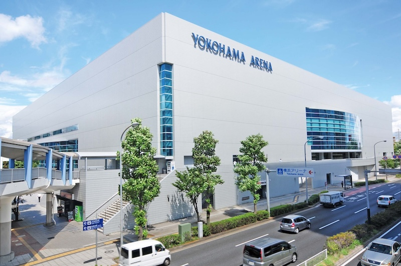
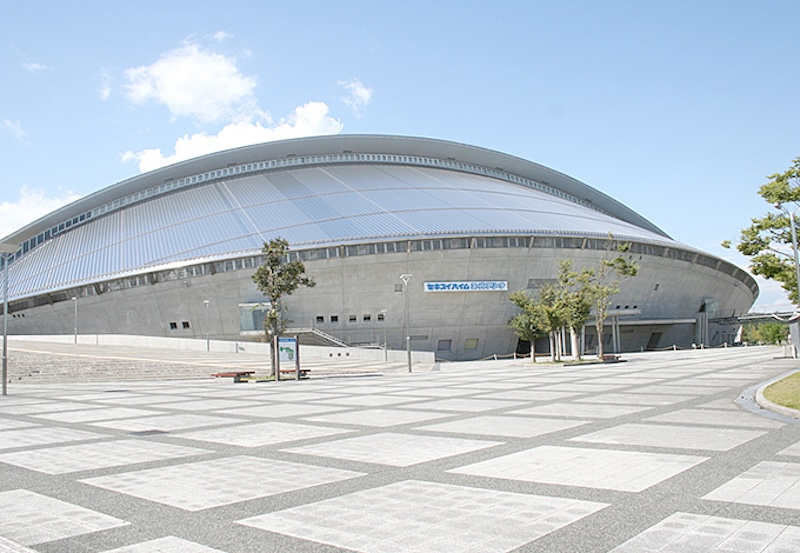
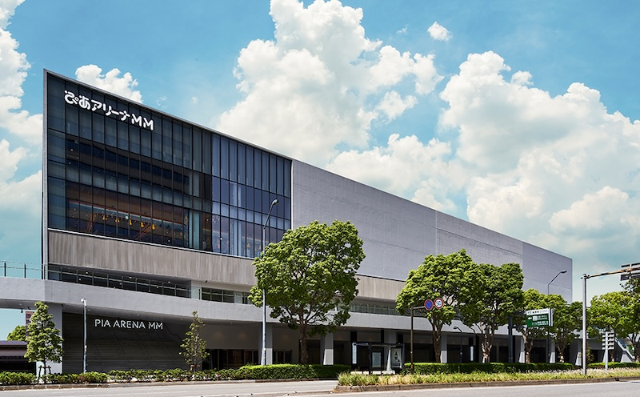
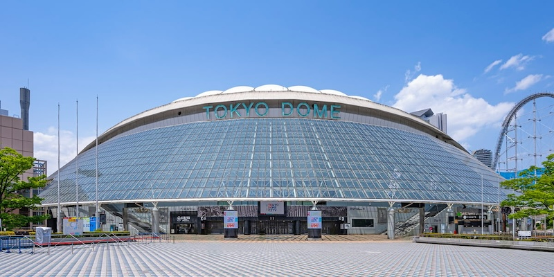
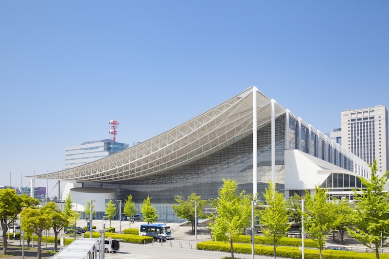
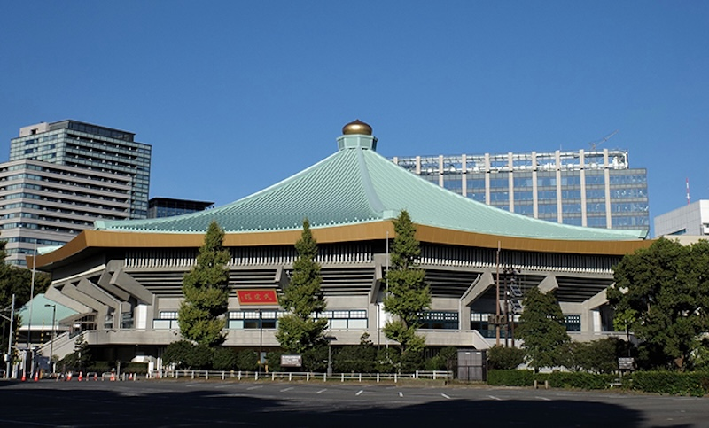
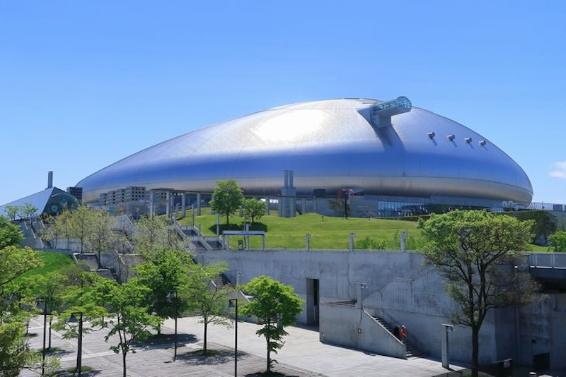
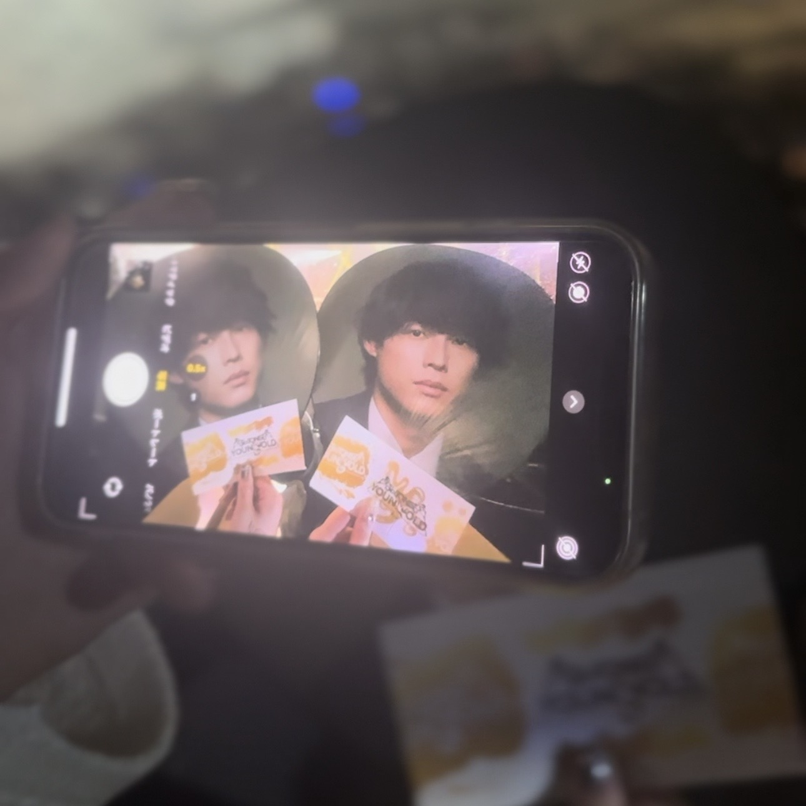
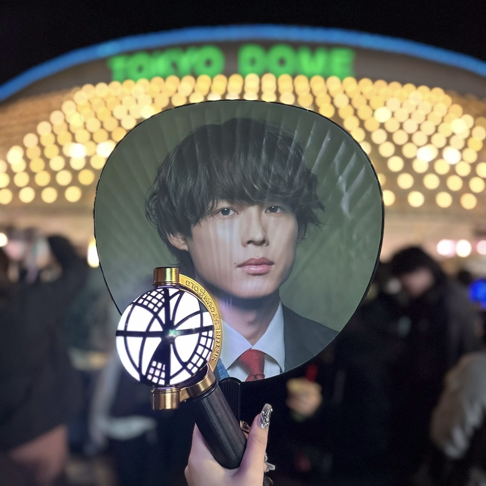
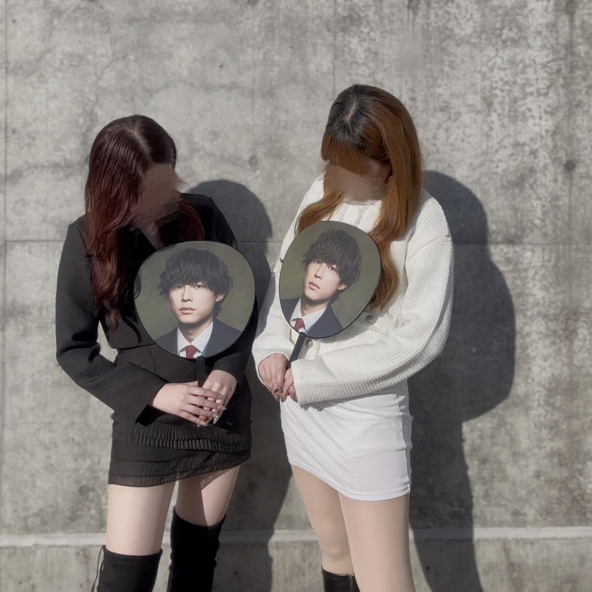

💖好きなコンサート会場💖
1.横浜アリーナ

アリーナツアーといったら横浜アリーナってぐらい外せない会場💡
とにかく立地がよく、会場周辺の写真を撮るスペースも割と多い📸✨
キャパ数に対しアリーナが狭いため、ステージの構成によってはアリーナ席なら埋もれにくい🥹💖
スタンド１列目がアリーナと同じ高さからだから外周あれば大優勝🌟
会場内の壁面に過去のイベント開催アーティスト名が年表みたいに掲示されてるから
開演までそれを眺めて思い出に浸るのもちょっとした楽しみ🎶
強いていうなら座席の表示が世間的にアリーナ席と言われるところがセンター、
スタンド席がアリーナって表示されるところが紛らわしい😔💦
2.セキスイハイムスーパーアリーナ

ひたすら狭いからスタンド最後列でも距離が近い🥹
スタトロがあればなおどこでも大優勝🌟
バクステ側にスタンド席がないからお尻を向けられることもない💖
ただ、アクセスが悪すぎるのと会場周辺に時間潰せる場所が何もないのが難点🌀
シャトルバス出てるのはありがたいけど冬は寒いし夏は暑すぎる🥵💦
けどほんとにどこでもメンバーとの距離が近いから全然許容できちゃう😌✨
3.ぴあアリーナMM

ピアもほんっとに狭い！小さい！
ただスタンドは3階まであるからセキスイよりは距離感じやすいかも💭階段結構しんどかった💦
けどピアも立地が神で、横アリよりも好立地！
横浜のど真ん中にあってほぼ目の前にランドマークタワーあるし
THE横浜を堪能できるのが最高🥹💖
お気に入りは桜木町駅からランドマークタワーまでの動く歩道から見る横浜の夜景🌃✨
横浜大好き民からしたら本当に最高の会場😻
【番外】東京ドーム

東京ドームは好きというより、横アリと違ったTHEコンサート感を感じられるし、
何より東京ドームでライブできるほど大きくなったなーってしんみりできる🥲💖
事前に案内が来る入場ゲートでなんとなくどの辺の席かわかっちゃったり、
なにより5万人も入るから席の当たり外れの差が大きくて
メンバーとの距離がやっぱり遠くなっちゃうのが難点💦
けど、それをも超える感情になるのが東京ドームだなーって感じだし、
会場が大きい分演出の幅が広がるからドームでしかできないコンサートを観れるのが良い🥹
退場する時に出口での爆風を受けるのも東ドの醍醐味💨
なんならこの洗練を受けるために行っちゃう節もあったりなかったり…
とにかく東京ドームは特別な会場の1つ✨
（マニアックな点で言うと「TOKYO DOME」の文字が高い位置にあって、
夜に光るから終演後に写真を撮りやすいのが助かる📸)
💧苦手なコンサート会場💧
1.幕張メッセ

幕張はフルフラットでスタンド席がないからほんっっっっとに見にくい🥲💦
ステージの構成によるけど、席の8割は埋もれると思っていい😔🌀
モニターあるじゃん！って思うかもだけど、バカでかい柱が邪魔して席によってはモニターすら
見えないってこともあるからほんとに苦手⚠️
唯一の救いといったら、グッズの物販が建物内だから真夏や真冬は助かることくらい…💦
2.日本武道館

武道館は特別感あるし、キャパ小さいから距離近いじゃんって思うかもだけど、
スタンド席の階段が急すぎてしんどいし終始転びそうで怖い😅
アリーナは席数少ないからキャパのほとんどはスタンド席だし、
アーティストによっては注釈付きでステージの斜め後ろまでお客さん入れたりするから
注釈付きでもいいから入りたい！って思ってもいざ入ってみると注釈すぎるしスナイパーの角度になっちゃう💦
あと物販の待機列が何回も外の急で幅狭い階段上り下りしなきゃいけなくて結構しんどい🌀
3.札幌ドーム

札ドは会場の構造自体は特に問題ないけど、立地が悪すぎる🥲
基本飛行機移動になるから遠征費がめちゃくちゃ高くつくし、
札幌駅からは電車だと地下鉄でしかいけなくて、その地下鉄も車両数が少ないし、
会場向かう人のほとんどが地下鉄使うから、ライブ前後はほんっっっっっとに激混み🌀💦
電車の中もギュウギュウ詰めで、前乗った時は梨泰院のハロウィンって
こんな感じだったのかなってぐらい酷い状況で怖かったし、
流石に次の日はタクシーで会場まで向かった🚕💨
それに冬にライブだと極寒すぎて、前行った時は吹雪いてて風凌ぐような場所もないから
会場入る頃には髪の巻きは取れちゃってて辛かった思い出が…🌀
けど札ドはドームの中で1番埋まりにくい会場で、埋まらなかったらスタンドの
上の方に黒幕張るらしくて、幕張られてなきゃすごいっぽくて私の推しのライブは上の方まで人入ってて嬉しかったしんみり🥹💖
札ドでライブするなら冬は避けてください運営さん!!!!!!!!!
前ツフォトギャラリー


